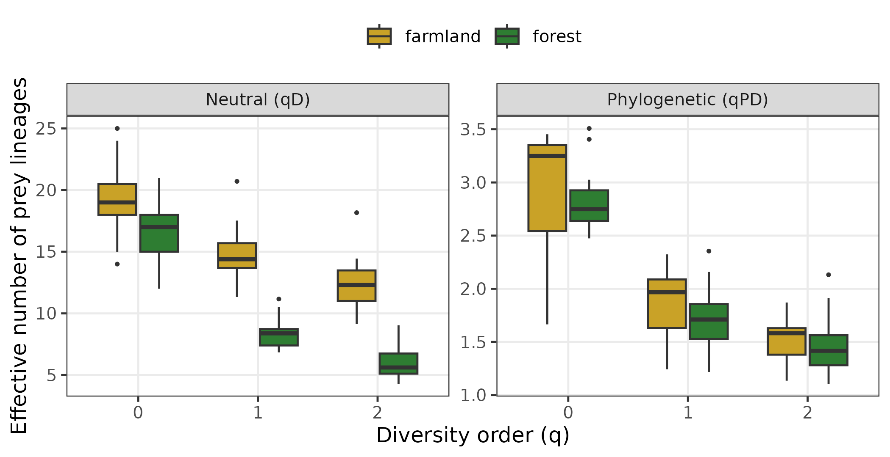
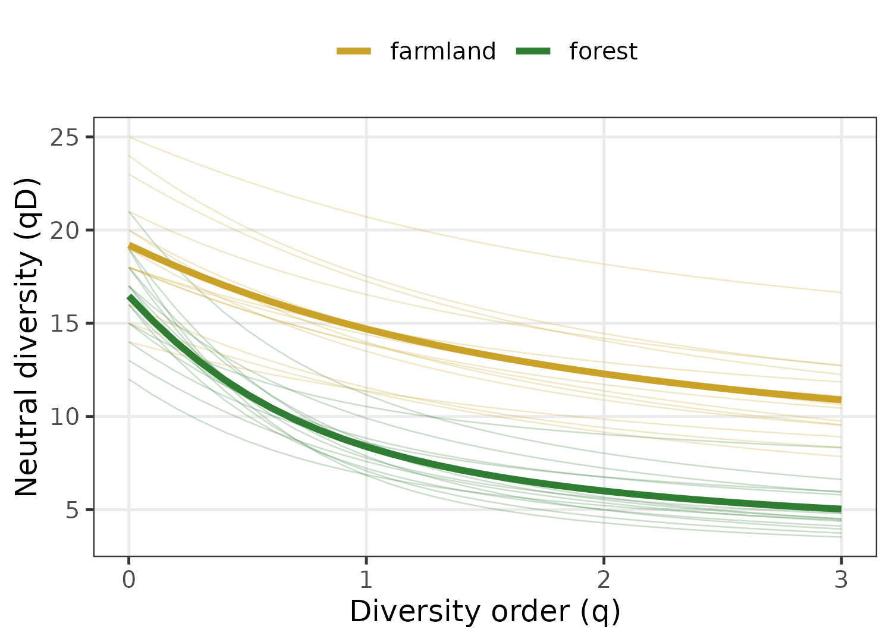
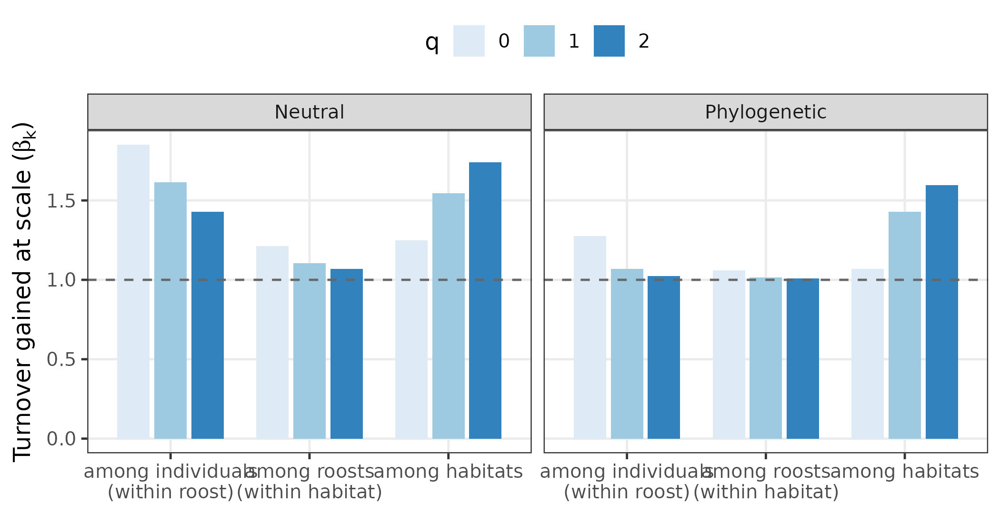

Case 1: Dietary niches of insectivorous bats
Source:vignettes/articles/use-case-bat-diet.Rmd
use-case-bat-diet.Rmd
library(hilldiv3)
library(ggplot2)
theme_set(theme_bw(base_size = 12) +
theme(panel.grid.minor = element_blank(),
legend.position = "top"))
# hilldiv3 results are long-format data.frame subclasses; drop the class so
# base `$<-` / `rbind` (and ggplot2) work without coercion.
as_df <- function(x) { class(x) <- "data.frame"; x }
pal <- c(forest = "#2E7D32", farmland = "#C9A227")New to Hill numbers? This is a complete worked example. If terms like diversity order
q, alpha/beta diversity or phylogenetic diversity are unfamiliar, start with the Getting started guide and the Diversity types article, then come back here.
Dietary metabarcoding turns faecal or guano samples into a count
table of prey amplicon sequence variants (ASVs), and a question that
immediately follows is how diverse, and how different, are the diets
of the animals we sampled? Because the prey of a predator are an
arbitrary slice of the tree of life, counting ASVs alone can mislead: a
bat that takes twenty species of moth has a taxon-rich but
phylogenetically narrow diet, whereas a bat that takes a beetle, a fly
and a true bug eats fewer taxa spread across far more of the insect
phylogeny. hilldiv3 makes both readings available from the
same call, and lets us ask at which level of a nested sampling
design dietary turnover actually occurs.
The data
We use a simulated guano-metabarcoding design: 50 insect-prey ASVs detected across 30 individual bats, nested as 5 individuals × 3 roosts × 2 contrasting foraging habitats (forest vs. farmland). Prey ASVs belong to four insect orders, and their phylogeny has shallow within-order clades on a deep order-level backbone. Forest bats are specialists, concentrating on a single dominant moth (Lepidoptera) clade; farmland bats are generalists spread evenly across Diptera, Coleoptera and Hemiptera.
The full simulation ships with the package (and is reproducible); we
simply source it here to obtain a count table (bat_counts),
a prey phylogeny (bat_tree) and a sample-design table
(bat_metadata).
data_candidates <- c(
file.path("inst", "manuscript", "data-bat-diet.R"),
file.path("..", "inst", "manuscript", "data-bat-diet.R"),
file.path("..", "..", "inst", "manuscript", "data-bat-diet.R"),
system.file("manuscript", "data-bat-diet.R", package = "hilldiv3")
)
data_candidates <- data_candidates[nzchar(data_candidates)]
data_path <- data_candidates[file.exists(data_candidates)][[1]]
sim <- source(data_path)$value
bat_counts <- sim$counts
bat_tree <- sim$tree
bat_metadata <- sim$metadata
dim(bat_counts) # 50 prey ASVs x 30 bats
#> [1] 50 30
range(colSums(bat_counts > 0)) # per-sample prey richness
#> [1] 12 25
head(bat_metadata)
#> habitat roost bat
#> bat01 forest roost1 bat01
#> bat02 forest roost1 bat02
#> bat03 forest roost1 bat03
#> bat04 forest roost1 bat04
#> bat05 forest roost1 bat05
#> bat06 forest roost2 bat06
hab <- function(s) bat_metadata$habitat[match(s, bat_metadata$bat)]Neutral and phylogenetic diversity from one interface
hilldiv() returns Hill numbers per sample at diversity
orders q = 0 (richness), q = 1 (Shannon) and
q = 2 (Simpson). The computation is cumulative: adding
tree = returns neutral and phylogenetic diversity
together in one tibble, tagged by a type column
(type = keeps just one).
# A single call with `tree =` returns both flavours, tagged by `type`.
labs <- c(neutral = "Neutral (qD)", phylogenetic = "Phylogenetic (qPD)")
alpha <- as_df(hilldiv(bat_counts, q = c(0, 1, 2), tree = bat_tree))
alpha$flavour <- factor(labs[alpha$type], labs)
alpha$habitat <- hab(alpha$sample)
aggregate(value ~ flavour + q + habitat, alpha, function(x) round(mean(x), 2))
#> flavour q habitat value
#> 1 Neutral (qD) 0 farmland 19.20
#> 2 Phylogenetic (qPD) 0 farmland 2.95
#> 3 Neutral (qD) 1 farmland 14.69
#> 4 Phylogenetic (qPD) 1 farmland 1.85
#> 5 Neutral (qD) 2 farmland 12.28
#> 6 Phylogenetic (qPD) 2 farmland 1.51
#> 7 Neutral (qD) 0 forest 16.47
#> 8 Phylogenetic (qPD) 0 forest 2.83
#> 9 Neutral (qD) 1 forest 8.38
#> 10 Phylogenetic (qPD) 1 forest 1.72
#> 11 Neutral (qD) 2 forest 6.00
#> 12 Phylogenetic (qPD) 2 forest 1.46
ggplot(alpha, aes(factor(q), value, fill = habitat)) +
geom_boxplot(outlier.size = 0.6, width = 0.7) +
facet_wrap(~ flavour, scales = "free_y") +
scale_fill_manual(values = pal, name = NULL) +
labs(x = "Diversity order (q)", y = "Effective number of prey lineages")
Forest specialists and farmland generalists differ only modestly in
prey richness (q = 0), but the gap widens sharply
at higher q: at q = 2 the forest diet
collapses to an effective ~6 prey ASVs against ~12 in farmland, because
a few dominant moths carry most of the forest reads. The phylogenetic
numbers show that the farmland diet is also consistently broader
across the insect phylogeny — the generalists span more of the prey
tree of life even where their taxon counts are similar.
Diversity profiles make the dominance structure explicit
Reading diversity at a single q can mislead; a
diversity profile, hillprof(), traces
qD continuously and exposes the whole evenness structure in
one curve.
prof <- as_df(hillprof(bat_counts, q = seq(0, 3, by = 0.1)))
prof$habitat <- hab(prof$sample)
prof_mean <- aggregate(value ~ q + habitat, prof, mean)
ggplot(prof, aes(q, value, group = sample, colour = habitat)) +
geom_line(alpha = 0.25, linewidth = 0.3) +
geom_line(data = prof_mean, aes(group = habitat), linewidth = 1.3) +
scale_colour_manual(values = pal, name = NULL) +
labs(x = "Diversity order (q)", y = "Neutral diversity (qD)")
The forest profiles fall away more steeply and sit lower — the
signature of a few dominant prey — while the farmland profiles decline
gently from a higher richness, the signature of a more even diet.
hilleven() condenses this into a single number:
even <- as_df(hilleven(bat_counts, q = 2))
even$habitat <- hab(even$sample)
aggregate(value ~ habitat, even, function(x) round(mean(x), 3))
#> habitat value
#> 1 farmland 0.640
#> 2 forest 0.372The mean q = 2 evenness is far lower in forest than in
farmland, confirming that forest diets are dominated by a handful of
moth ASVs.
At which scale does the diet turn over?
A nested design asks a question a single alpha/beta split cannot
answer: does diet vary mostly between individual bats,
between roosts, or between habitats?
hillpart() answers it directly with a one-sided
hierarchy formula, decomposing the pooled (gamma) diversity
into one beta per hierarchical level. Each beta is the
turnover gained at that scale, and the chain telescopes exactly
(gamma = alpha_finest × ∏ beta).
hier_n <- hillpart(bat_counts, q = c(0, 1, 2),
hierarchy = ~ habitat / roost, metadata = bat_metadata)
hier_p <- hillpart(bat_counts, q = c(0, 1, 2), tree = bat_tree,
hierarchy = ~ habitat / roost, metadata = bat_metadata)
hier_p
#> <hilldiv3 result: phylogenetic>
#> 12 rows x 5 cols
#>
#> q scale n_units diversity beta
#> 1 0 sample 30 2.889998 NA
#> 2 0 roost 6 3.688281 1.276222
#> 3 0 habitat 2 3.905978 1.059024
#> 4 0 total 1 4.170406 1.067698
#> 5 1 sample 30 1.757890 NA
#> 6 1 roost 6 1.881011 1.070039
#> 7 1 habitat 2 1.910385 1.015616
#> 8 1 total 1 2.729837 1.428946
#> 9 2 sample 30 1.447888 NA
#> 10 2 roost 6 1.484669 1.025403
#> 11 2 habitat 2 1.496183 1.007755
#> 12 2 total 1 2.387101 1.595461
beta_n <- as_df(hier_n); beta_p <- as_df(hier_p)
beta_n <- beta_n[beta_n$scale != "sample", ]; beta_n$flavour <- "Neutral"
beta_p <- beta_p[beta_p$scale != "sample", ]; beta_p$flavour <- "Phylogenetic"
betas <- rbind(beta_n, beta_p)
betas$scale <- factor(betas$scale, c("roost", "habitat", "total"),
labels = c("among individuals\n(within roost)",
"among roosts\n(within habitat)",
"among habitats"))
ggplot(betas, aes(scale, beta, fill = factor(q))) +
geom_col(position = position_dodge(0.8), width = 0.7) +
facet_wrap(~ flavour) +
geom_hline(yintercept = 1, linetype = 2, colour = "grey40") +
scale_fill_brewer(palette = "Blues", name = "q") +
labs(x = NULL, y = expression("Turnover gained at scale (" * beta[k] * ")"))
The two flavours localise turnover to different scales. Neutral
turnover is split between individuals and habitats:
bats sample different exact prey ASVs from one mouthful to the next, and
the two habitats offer different prey. But phylogenetic
turnover is concentrated almost entirely between habitats and
is negligible within them: individuals in the same habitat eat
phylogenetically interchangeable prey, while the forest and farmland
diets are drawn from genuinely different parts of the insect tree. This
neutral-vs-phylogenetic, scale-resolved contrast — available across all
three diversity types from one engine — is unique to
hilldiv3.
Summary
From a single ASV table and a prey tree, hilldiv3
delivered: per-sample neutral and phylogenetic Hill numbers
(hilldiv()), full diversity profiles
(hillprof()) and evenness (hilleven()), and a
scale-resolved nested partition of turnover under both flavours
(hillpart() with a hierarchy formula) — a
complete dietary-diversity analysis through one consistent interface.
The neutral-versus-phylogenetic contrast, resolved across the whole
diversity profile and across every level of the nested design,
is what lets a single study say not just how much diets differ
but in what currency and at which scale.
References
- Hill, M.O. (1973). Diversity and evenness. Ecology, 54, 427–432.
- Jost, L. (2007). Partitioning diversity into independent alpha and beta components. Ecology, 88, 2427–2439.
- Alberdi, A. & Gilbert, M.T.P. (2019). A guide to the application of Hill numbers to DNA-based diversity analyses. Mol. Ecol. Resour., 19, 804–817.